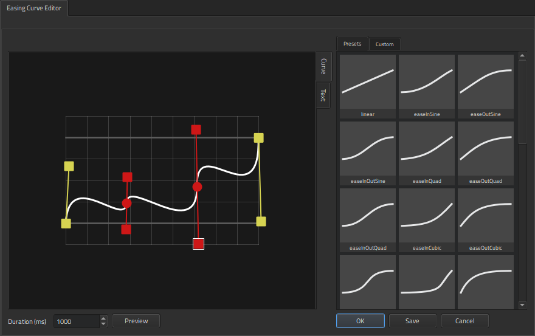

Editing Easing Curves
Easing curves define the progress of animation to make motion appear more natural because real objects don't usually move at a constant speed nor start and stop instantly. You can add and edit easing curves for nonlinear interpolation to make components appear to pick up speed, slow down, or bounce back at the end of an animation.
You can attach easing curves to:
- Keyframes in timeline animations
- Transitions
- Property animation component instances
You can use Easing Curve Editor to select and edit easing curves.
Selecting Easing Curves
You can use the preset curves or modify them by dragging the curve handles around. You can add points to the curve and drag them and the point handles to modify the curve. When you are happy with the curve, you can save it as a custom curve. For more information about easing curve types, see the technical documentation for easing curves.

To select an easing curve:
- Select an easing curve in the Presets tab.
- In the Duration (ms) field, select the duration of the easing function in milliseconds.
- Select Preview to preview the curve.
- Select OK to attach the easing curve and return to the view where you are adding the curve.
To zoom into and out of the easing curve editor, use the mouse roller. To reset the zoom factor, right-click in the picker and select Reset Zoom.
Easing Curves in Timeline Animations
For timeline animations, you can also use the more advanced Curves view that shows the interpolated values of an animated property over the animation range.
The animation curves present a more readable view of the animation by showing the effective values of the animated properties over the animation range. In order to do so, they need to be converted to and from easing curves. This comes with the following side effects:
- Interpolation between identical current and previous keyframe values is meaningless regardless of what the easing curve looks like.
- Some easing curves are not trivially mappable to animation curves and are therefore painted in a different color and without handles.
Attaching Easing Curves to Keyframes
To attach easing curves to keyframes:
- Right-click a keyframe in Timeline and select Easing Curve Editor in the context menu.
- Select an easing curve, as described in Selecting Easing Curves.
When you attach easing curves to keyframes, the shape of the keyframe marker on a keyframe track in Timeline changes from  to a marker that describes the type of the selected easing curve.
to a marker that describes the type of the selected easing curve.
Attaching Easing Curves to Transitions
To attach easing curves to transitions:
- In Transitions, select the
 (Easing Curve Editor) button.
(Easing Curve Editor) button. - Select an easing curve, as described in Selecting Easing Curves.
Attaching Easing Curves to Property Animations
To attach easing curves to property animations:
- In Navigator, select an Animation component instance.
- In Properties, select the (Easing Curve Editor) button.
- Select an easing curve, as described in Selecting Easing Curves.
Customizing Easing Curves
To customize easing curves:
- In Easing Curve Editor, select an easing curve in the Presets tab.
- Drag the curve handles to modify the curve.
- Right-click in the editor, and select Add Point to add points to the curve.
- Drag the points or the point handles to modify the curve. If the curve becomes invalid, it turns red in the editor and the Save button is disabled.
- Select Save to save your changes to the curve.
- In the Name field, enter a name for the custom curve, and then select OK to save the curve in the Custom tab.
To paste easing curve definitions to Easing Curve Editor as text, select the Text tab.